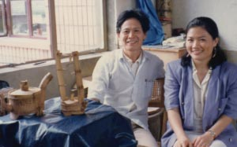
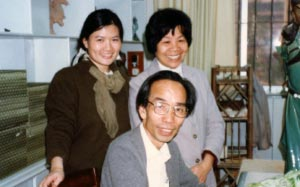
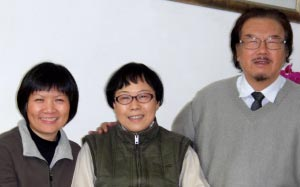
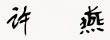

1989年 每月造訪徐秀棠大師於宜興紫砂廠
1990年 與廖洪標夫婦於石灣美陶廠合影
2004年 陶陶居與尚濤夫婦相見歡
陶陶居的故事
基於對藝術的熱愛，我們於1983年創立了陶陶居至今，一直以來都秉持著絕對虔誠與負責的心態來追求真、精、稀的作品，因為陶陶居知道 : 在當今的大環境中，這是對自己、同時也是對作者最好的交代。
這樣的堅持很苦也很難，但也因為如此，許多中國的陶藝和書畫名家，才願意與陶陶居合作。二十多年來，我們先後走遍了江蘇宜興、廣東石灣、上海、南京等地，結識了廖洪標、徐秀棠與徐漢棠兄弟、尚濤、顧景舟、沈巨華、顧紹培等大師級人物，並在不斷地學習與交流之下，親眼見證了數件曠世之作的誕生，過程雖艱辛，可也特別有感觸，陶陶居能有幸在中國經濟開放前後，收藏到這些近代中國文化中的絕品，讓我們與有榮焉，也意識到唯有這樣的經營，才能在藝術家創作、藝術品內涵及審美者感受三者之間達成良性循環。此陶陶居空中博物館的推出，就是希望能藉由這些鉅作來向世界發聲，我們期望作品的影響力，可以提供未來的藝術工作者，無論是著重現代理論的學院派，或是傳統美術的創作者，擁有一個全新的交集空間，也期待其所發揮的震撼力，得去除傳統與現代、東方與西方藝術的鴻溝，為兩岸的美學教育和新文藝復興思潮帶來新的啟示。
二十一世紀是中國人的時代，但可以代表中國文化的東西又在何處？冀望這個陶陶居空中博物館，能讓大家再次見證我們華人的驕傲!
「因為有了陶陶居，收藏不再只是收藏，而是種文化的傳承。」
陶陶居
